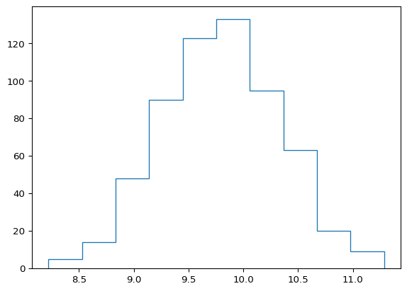
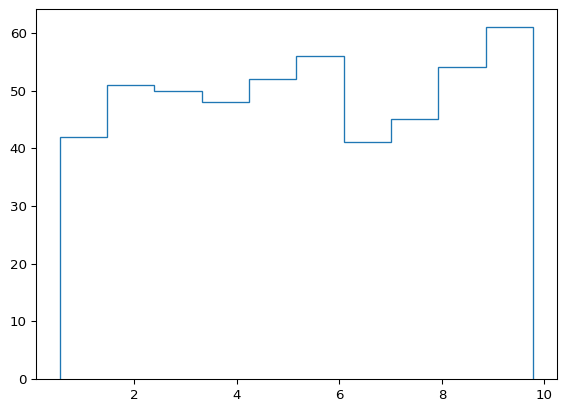

Calc 02
Gráficas y funciones estadísticas en Calc
Los datos obtenidos desde cualquier origen son discretos, es decir, representan el estado de un sistema (cualquiera sea) en algún instante, la relación entre dos variables para algunas condiciones, la cantidad de algún objeto,etc.
Para representaciones de tipo estadístico donde se intenta contar o cuantificar la cantidad de eventos los gráficos más utilizados son los de barras, histogramas, de torta y sus variantes.
Para representaciones dependientes del tiempo o que expresen la relación entre variables los gráficos más representativos son los de dispersión en donde cada dato, si suponemos un arreglo bidimensional, posee dos coordenadas específicas, que usualmente representamos en el eje horizontal y vertical de una gráfica respectivamente.
Para insertar un gráfico de disperisón en Libre Office Calc, hacemos lo siguiente:
insertar > gráfico> tipo de gráfico > xy dispersión

Series de datos
Para hacer más facil nuestro trabajo conviene que los datos deben estar estructurados en columnas donde la primera columna contiene los datos que irán al eje horizontal y la segunda los del eje vertical.
Esto puede cambiarse luego desde el menú inserción de gráfico, pero es más sencillo tener los datos bien organizados desde el comienzo.

Formato del gráfico
La correcta disposición de los elementos en el lienzo del gráfico no sólo hace posible una lectura más amena sino que pone en juego la comprensión misma de los datos indicados en la gráfica.
Se deben colocar títulos, subtítulos y nombres de ejes indicando las unidades correctas, así tambien como respetar los estilos tipográficos del documento en el cual se va a insertar el gráfico. Se puede optar por un estilo que se integre o que se destaque dependiendo de los requerimientos específicos, pero esta decisión debe ser a conciencia.
Para los títulos y subtitlos de figuras, es preferible usar tipografías sin serif ya que su legibilidad es mejor en tamaños pequeños.

Más allá de los estilos preferibles a nivel estético existen algunos principios generales que escapan a los alcances de este apunte pero el ejemplo de arriba vale como muestra de como una misma información se puede disponer de forma distinta y ayudar o entorpecer el entendimiento de aquello que se está queriendo comunicar.

Líneas de cuadrícula
Si se hace doble click en cualquiera de los dos ejes y luego click derecho se ofrece la posibilidad de agregar o quitar líneas de cuadrícula principal y secundarias. La cantidad de elementos entre la cuadrícula principal y la secundaria se encuentra manejado por la opción de

También con el gráfico seleccionado a través del menú insertar > cuadrículas
Ejes, leyendas y rótulos
La información contextual del gráfico: ejes y rótulos disponibles se pueden elegir al momento de crear la gráfica o haciendo doble click sobre la misma y eligiendo de la barra los elementos que necesitemos o con el grafico seleccionado a través del menú insertar

Barras de error
Con el gráfico seleccionado hacemos insertar > barras de error ahi podremos elegir las diferentes variantes que contamos para las barras de error

Histogramas
Usualmente cuando se tienen datos a tratarse de forma estadística, resulta útil usar hitogramas para representarlos. Por ejemplo, si se efectúan n mediciones para obtener un valor para la constante gravitatoria en la tierra (\(9,8 \dfrac{m}{s^2}\)) y si se han tomando los recaudos necesarios para llevar adelante el experimento es de esperar que la gran mayoría de los valores obtenidos se agrupen cerca del valor más probable, que dependiendo de la incerteza del método o los experimentadores, podrá ser más o menos cercano al “verdadero”, que es aquél contra el cual comparamos nuestros resultados.
En este caso, si graficamos “cuantas veces obutvimos” valores para cierto intervalo o clase, obtendremos algo similar a esto:
Donde se observa una distribución de datos normal como se ve en la siguiente figura:

Si por el contrario, tiramos un dado n veces (y lo hacemos muuuuchas veces) veremos que la distribución de “cuantas veces salió el uno”, “cuantas veces salió el dos”, etc. tiene esta pinta:

En ambos casos estamos viendo un gráfico de clase vs frecuencia, las clases pueden ser intervalos de alguna magnitud medida: lluvias de entre 3 y 5 mm, alturas entre 1.6 y 1.8 m, etc y la frecuencia la cantidad de elementos que pertenecen a esa clase o intervalo.
Una regla útil para saber en cuantos intervalos debemos “seccionar” nuestros datos es usar \(N=\sqrt{n}\) en donde \(N\) es la cantidad de intervalos y \(n\) la cantidad de datos. El ancho del intervalo, luego de reondear \(N\) a un entero sera \(\frac{\text{rango}}{N}\) en donde el rango es \(\text{valor máximo} - \text{valor minimo}\).
Funcion FRECUENCIA() y funciones matriciales
Las funciones matriciales son aquellas cuyo resultado no ocupa una única celda y se extiende por lo tanto, como una matriz o vector sobre la planilla dependiendo de la función. Las funciones matriciales se ven encerradas entre llaves si se mira la barra de fórmulas, pero estas llaves no se ingresan manualmente sino usando la combinación de teclas ctrl + shift + enter al momento de ejecutar la función.
La función FRECUENCIA(DATOS,CLASES) es una función matricial y como indica su sintaxis tiene dos argumentos, los datos que usará y los intervalos en los que ubicará a los datos. Freuencia devuelve una matriz donde indica cuántos elementos hay en cada intervalo indicado.
Crear un histograma
Una vez que tenemos nuestro datos en la planilla debemos decidicir cuántos intervalos o clases construiremos a partir de ellos, una vez hecho eso, creamos una celda qe contenga como valor el extremo superior del intervalo (podemos desplegarlos en columnas o en filas).
En Otra celda, llamamos a la función
FRECUENCIAy seleccionamos los datos y nuestras clases. No olvidar de apretarctrl+shift+enteral finalizar.Con los datos de frecuencia y los intervalos (clases) se construye un gráfico de barras, con ambas columnas (o filas) seleccionando “etiquetas en primera columna (o fila)”.
Funciones estadísticas: Promedio, moda y mediana
Dentro de los indicadores denominados medidas de tendencia central, que permiten cuantificar valores representativos de un conjunto encontramos al promedio, la moda y la mediana.
El cálculo matemático para cada uno de ellos es;
El promedio representa la media aritmética de los valores de un conjunto \[ \bar{x} = \frac{\sum_{i=1}^{n} x_i}{n} \]
En calc la función PROMEDIO(datos) devuelve el promedio del conjunto de datos dado como argumento (las referencias pueden ser vectores o matrices, es decir conjuntos de filas, columnas o filas y columnas).
Promedio no es representativo de un conjunto de datos cuando éstos poseen valores cuya distribución contiene extremos poco frecuentes pero muy alejados del resto de los demás.
El ejemplo típico: hay dos personas, una gana tiene diez millones de pesos, la otra tiene cero, pero en promedio, tienen ambos cinco millones. El valor 5 representa el “medio” entre ambos valores pero no es representativo del capital de ninguna de las dos personas: sobreestima en un caso y subestima en el otro.
La moda representa el valor que más se repite en un conjunto de datos
\[ \text{Moda} = \{x_i \mid \max \text{frecuencia}(x_i)\} \]
En calc, las funciones MODA.UNO() y MODA.VARIOS() nos dan en cada caso, el valor más repetido (UNO) o los valores más repetidos (VARIOS). La función MODA.VARIOS() es una función matricial y debe ser ingresada apretando ctrl+shift+enter al finalizar la escritura en la celda.
Para más información acerca de las funciones matriciales podés ver la ayuda oficial sobre el tema. Para extender los resultados de una función matricial cuado ésta no se expande automáticamente se debe extender la selección desde la esquina inferior derercha de la celda de la fórmula.
La moda es representativa de un conjunto de datos cuando el criterio de igualdad es fácil de establecer, por ejemplo cuando se trata de variables ordinales o cuantitativas enteras, como los años o las posiciones ocupadas en un listado. Para variables que no son números enteros, la apreciación del instrumento usado para obtenerlas puede servir para igualar los valores antes de calcular la moda. Por ejemplo, si se mide con una regla que aprecia al milímetro, 23,2 y 23,1 pueden ser considerados el mismo valor ya que sus incertezas se solapan.
La mediana representa el valor central de un conjunto de datos ordenado. \[ \tilde{x} = \begin{cases} x_{\frac{n+1}{2}}, & \text{si } n \text{ es impar} \\ \frac{x_{\frac{n}{2}} + x_{\frac{n}{2}+1}}{2}, & \text{si } n \text{ es par} \end{cases} \]
En LO la mediana se calcula con la función MEDIANA(datos). La mediana suele ser un dato representativo de un cojunto incluso cuando existen datos que ocupan los extremos por un margen considerable. Consideremos el conjunto: \[
\left( -1000,1,1,1,1,1,1,1,1,1,1,1,1,1,1,1000 \right)
\]
Aquí la mediana da una información más representativa de los datos.
Varianza y Desviación Estándar
La varianza y la desviación estándar son medidas de dispersión que nos indican cuán dispersos están los datos respecto a la media.
La varianza (\(\sigma^2\)) se define como el promedio de los cuadrados de las diferencias entre cada dato y la media:
\[\sigma^2 = \frac{\sum_{i=1}^{n} (x_i - \bar{x})^2}{n}\]
La desviación estándar (\(\sigma\)) es simplemente la raíz cuadrada de la varianza:
\[\sigma = \sqrt{\sigma^2} = \sqrt{\frac{\sum_{i=1}^{n} (x_i - \bar{x})^2}{n}}\]
Deducción
La varianza surge al considerar cómo se dispersan los datos alrededor de la media. Primero, calculamos la distancia de cada dato respecto a la media \(\bar{x}\):
\[ d_i = x_i - \bar{x} \]
Si sumamos estas distancias, obtenemos cero (ya que la media balancea los datos). Para evitar esto, usamos los cuadrados de las diferencias:
\[ \sum_{i=1}^{n} (x_i - \bar{x})^2 \]
Dividiendo por \(n\), obtenemos la varianza, que mide la dispersión promedio de los datos. La desviación estándar es su raíz cuadrada, proporcionando una medida en las mismas unidades que los datos originales.
Interpretación
- Valores pequeños de \(\sigma\) indican poca variabilidad en los datos.
- Valores grandes de \(\sigma\) muestran que los datos están más dispersos respecto a la media.
\[ \sigma = \sqrt{\sigma^2} = \sqrt{\frac{\sum_{i=1}^{n} (x_i - \bar{x})^2}{n}} \]
Desviación para una muestra o una población
Cuando consideramos el promedio \(\bar{x}\) para una muestra, no estamos accediendo a los posibles infinitos valores que pudiera tener la población en estudio, por ejemplo, no podemos medir la carga de todos los electrones del universo para luego promediarlas, por lo que nuestras medidas están restringidas no a la población, sino a una muestra de ella.
Para calcular la desviación estándar para una muestra (y no para una población) debemos primero usar los datos de la muestra para obtener \(\bar{x}\), al hacer esto, por la definición de media, existen sólo \(n-1\) valores realimente “libres” en cuanto a la diferencia que pueden tener con la media, el último valor que intentemos calcular necesariamente deberá ser tal que la suma nos de cero.
Por eso se dice que el sistema tiene “un grado menos de libertad” y siempre que calculemos la varianza o la desviación estándar para una muestra, la fórmula se ajusta de la siguiente forma:
\[ \sigma = \sqrt{\sigma^2} = \sqrt{\frac{\sum_{i=1}^{n} (x_i - \bar{x})^2}{n-1}} \]
Si el número de muestras \(n\) es suficientemente grande, \(\bar{x} \to \mu\) (la media de la muestra tiene a la media de la población) y por lo tanto, el ajuste no representa una gran cambio en resultado.
Resumen estadístico
Si hacemos datos> estadísticas > estadíticas descriptivas podremos obtener los parámetros estadísticos mencionados arriba (junto a otros que no trabajaremos) para un intervalo de celdas de la planilla.
Ejercitación
Los contenidos vistos en esta clase se aplican tanto al TP 4 (que ya están en condiciones de encarar) como al TP 5, para el que necesitarán elementos de próximas clases.
Graficar una función
Grafique las funciones que se mencionan en el punto 2 del TP3. Agrupe las funciones de la siguiente forma
- Funciones trigonométrias
- Funciones trigonométricas inversas
- Catenaria
- Funciones exponenciales
- Funciones logarítmicas
Cada grupo de funciones deberá estar en una sola gráfica y contener:
- Nombres en los ejes (x,y)
- Título y subtítulo
- Leyenda
Pruebe utilizar:
- Gáficos de dispersión
- Gráficos de barras (use primera columna como etiquetas)
Como ejemplo de usar un gráfico de barras, debería ver algo como esto:

Histogramas
Usando este archivo como base, crear un histograma para la la hoja masas.
Referencias
- 🔗 Ayuda oficial de Libre Office
- 🎥 Gráficas de dispersión
- 🔗 Barras de error en Libre Office
- 🔗 Diseño de gráficos basados en el estilo de Edward Tufte
- 🔗 Sitio de Edward Tufte
- 🔗 Guía de Nature para figuras
- 🔗 Guía de principios para visualización
- 🔗 Apunte de la materia laboratorio 1 Sobre Gráficas en Excel
- 🔗 Histogramas en LO
- 🔗 Datasets CERN
- 🔗 Distribución normal en matplotlib
- 🔗 Histogramas en matplotlib